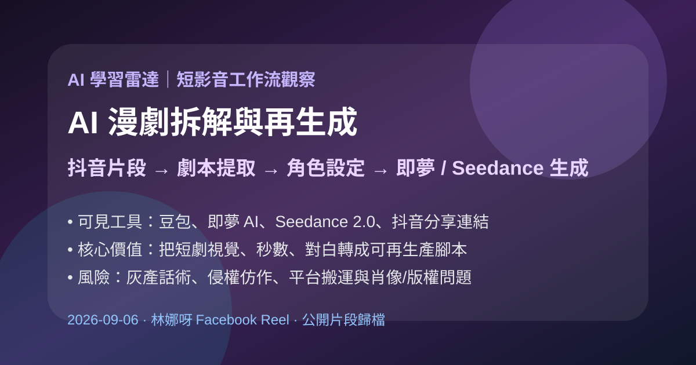
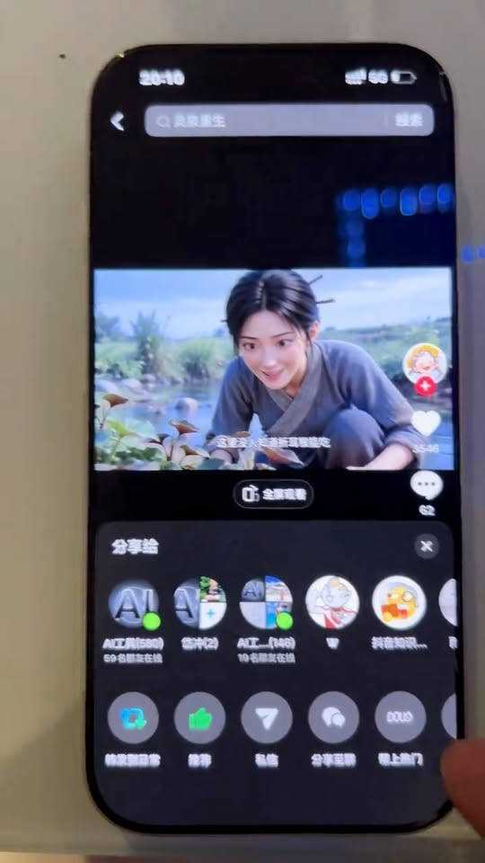
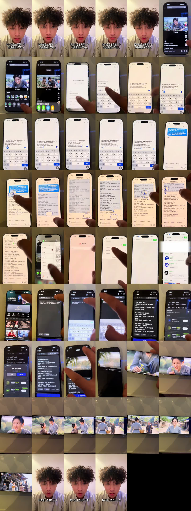

Facebook｜林娜呀：用 AI 提取抖音漫劇腳本，再用即夢 / Seedance 生成短劇的灰產化工作流觀察

一句話摘要
這支 Reel 展示的是「AI 短劇工廠化」的一個縮影：先找抖音上的 AI 漫劇片段，用 AI 對話工具把影片拆成劇本、場景秒數與對白，再放進即夢 AI 類型的短劇生成工具，透過 Seedance 2.0 等影片模型產出相似的古裝短劇。它很適合做為 AI 學習雷達案例，但應以「內容生產鏈觀察」與「合規風險提醒」角度保存，不宜當作可直接照抄的搬運教學。
來源脈絡
- Facebook 分享連結：https://www.facebook.com/share/r/1ENdBWUBT2/?mibextid=wwXIfr
- Reel canonical：https://www.facebook.com/61570688281432/videos/1631029221770859/
- 作者：林娜呀
- Reel ID：1631029221770859
- 影片長度：約 52 秒
- Facebook OpenGraph 顯示：21 個心情、16 則留言；yt-dlp 擷取觀看數約 1,722
Reel 可見流程
- 開頭字幕說：「我可能是全網第一個發現漫劇灰產的人」。
- 作者打開抖音 / 短影音中的古裝「AI 漫劇」片段。
- 透過分享連結把影片送到 AI 對話工具，畫面標題可見「提取抖音視頻劇本」。
- 提示詞方向是：幫我提取視頻中的劇本，精確到全部場景秒數、對話。
- AI 回覆把影片拆成分段劇本，例如：0.0–2.5 秒、3.0–9.8 秒、10.5–17.8 秒，並列出人物、場景與對白。
- 作者複製整理後的劇本，切到深色介面的短劇生成工具頁面，畫面顯示「1.劇本」「輸入想法」「輸入劇本」。
- 生成方式包含「步驟生成」「極速生成」「極速PRO」，其中極速PRO 標註 Seedance 2.0，適合 4–15 秒視頻短劇、建議文本少於 800 字。
- 後段顯示「定制角色」與生成後的古裝短劇畫面。
- 結尾字幕說：「找不到工具的打工具」，帶有私域導流或工具包 CTA 味道。


官方與產品脈絡補強
### 豆包
豆包是字節跳動旗下 AI 智能助手，官網可見對話、PPT 生成、圖像生成、幫我寫作、視頻生成、翻譯、深入研究等入口。Reel 畫面中的「提取抖音視頻劇本」看起來像是以豆包或類似 AI 對話工具建立的任務型對話，用來把影片連結轉成結構化劇本。
官方入口：
### 即夢 AI / 剪映
即夢 AI 官網主打 AI 視頻生成、文/圖生視頻、中文創作與智能畫布；剪映官網也把「剪映 AI」定位為一站式創作工具，並有「視頻生成」「營銷成片」等入口。Reel 中深色介面顯示的「輸入劇本」「定制角色」「Seedance 2.0」等元素，符合中國短影音 AI 創作工具正在把劇本、角色與短片生成包成低門檻流程的趨勢。
即夢 AI：
剪映：
為什麼值得收進 AI 學習雷達
- 它示範了 AI 內容生產從「生成單張圖 / 單段影片」進一步變成「熱門短劇拆解 → 劇本結構化 → 角色與分鏡再生成」。
- 這種流程會快速降低短劇、漫劇、短影音廣告素材的製作門檻。
- 對教學與企業導入來說，這是很好的討論案例：AI 不只會生內容，也會把既有內容反向工程成可複製的生產模板。
- 同時它也是風險案例：一旦用在搬運、仿作、洗稿或規避平台審核，就容易變成灰產工具鏈。
合規與倫理提醒
- 不要直接複製他人的抖音 / 短劇劇情、角色設定、分鏡與台詞後再生成近似作品。
- 若要做成商業內容，應建立原創劇本、授權素材、人物肖像與聲音授權流程。
- 對 AI 生成短劇要保留審稿：劇情、台詞、人物形象、商標、音樂與平台規範都需人工確認。
- 「漫劇灰產」這類話術本身就是風險訊號，應用於學習與風險辨識，而非鼓勵照做。
可轉成正向用途的做法
- 用 AI 提取自己的影片腳本，整理成可複用的分鏡模板。
- 分析爆款短劇節奏：開場鉤子、衝突、角色關係、轉折點與結尾 CTA。
- 把既有品牌故事或課程案例改寫成原創短劇，不直接搬運他人內容。
- 建立「AI 生成 → 人工審稿 → 版權檢查 → 發布」的內容治理流程。
原始連結
Facebook Reel：
https://www.facebook.com/reel/1631029221770859
豆包：
即夢 AI：
剪映：